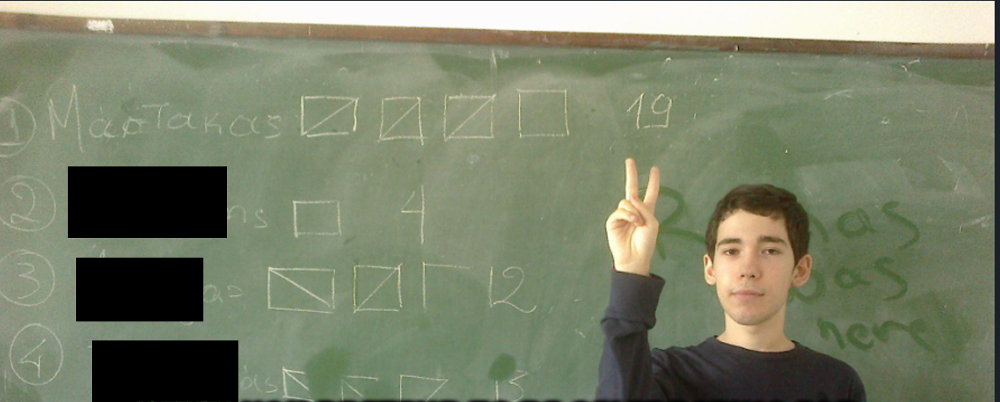

Αίθουσα Εκστρατειών
Χρονικά Θεσμικών Αγώνων και Πολιτισμικής Προσπάθειας
Τα ακόλουθα αρχεία καταγράφουν τις σημαντικότερες εκστρατείες, πρωτοβουλίες και θεσμικές δράσεις που συνδέονται με τον Ορέστη Β΄.

Χάρτης Εκστρατειών του Ορέστη του Μεγάλου
2010-2013 - Οι Πρώτες Αψιμαχίες
Η πρώτη καταγεγραμμένη εκλογική εκστρατεία που συνδέεται με τον Ορέστη Β΄ πραγματοποιήθηκε κατά τη διάρκεια των μαθητικών του χρόνων. Παρότι περιορισμένης κλίμακας, σηματοδότησε την απαρχή μιας πορείας συνεχούς θεσμικής συμμετοχής, η οποία αργότερα επεκτάθηκε στα πανεπιστήμια, στους ευρωπαϊκούς θεσμούς και στη δημόσια ζωή.
Οι Ιστοριογράφοι καταγράφουν ότι στη διάρκεια της θητείας του οι συνελεύσεις της τάξης πραγματοποιούνταν με ασυνήθιστη συχνότητα.

2013-2018 - Η Εκστρατεία για την Ανεξαρτησία του Πανεπιστημίου (ΕΜΠ)
Κατά τα χρόνια των σπουδών του στο Εθνικό Μετσόβιο Πολυτεχνείο, ο Ορέστης Β΄ ίδρυσε αυτό που αργότερα έγινε γνωστό ως Ρωμαϊκή Αναγέννηση, η οποία στη συνέχεια μετονομάστηκε σε Ανεξάρτητο Φοιτητικό Κίνημα.
Η κίνηση επιδίωκε τον περιορισμό της κομματικής επιρροής στη διοίκηση του πανεπιστημίου, την αποκατάσταση της ακαδημαϊκής τάξης, μεταξύ άλλων, μέσω της απομάκρυνσης παράνομων κομματικών αφισών, και την προώθηση της αξιοκρατίας εντός της φοιτητικής κοινότητας. Η εκστρατεία κορυφώθηκε σε αυτό που οι σύγχρονες πηγές αποκαλούν «Μάχη της 18ης Μαΐου 2016», μία ιστορική φοιτητική εκλογική αναμέτρηση που άλλαξε σημαντικά τις ισορροπίες στο ίδρυμα.
- 12,3% των φοιτητικών ψήφων.
- Το δημοφιλέστερο φοιτητικό προεκλογικό βίντεο στην ιστορία της Ελλάδας (64.000+ προβολές).
- Ξεπέρασε εκλογικά τις φοιτητικές παρατάξεις της Νέας Δημοκρατίας και του ΣΥΡΙΖΑ.
- Συνδέθηκε από ορισμένες πηγές με τη σταδιακή υποχώρηση της επιρροής της ΔΑΠ-ΝΔΦΚ στο ΕΜΠ.
Οι Ιστοριογράφοι του Βασιλικού Οίκου εξακολουθούν να διαφωνούν ως προς τον βαθμό στον οποίο τα γεγονότα αυτά συνέβαλαν στη μετέπειτα εμφάνιση περισσότερων ανεξάρτητων φοιτητικών κινήσεων στα ελληνικά πανεπιστήμια.
2019-2024 — Η Εκστρατεία για την Εκπροσώπηση των Ξένων Υποψηφίων Διδακτόρων (Πανεπιστήμιο St. Gallen)
Κατά τη διάρκεια των διδακτορικών του σπουδών στο Πανεπιστήμιο του St. Gallen, ο Ορέστης Β΄ ανέλαβε ενεργό ρόλο στη φοιτητική αυτοδιοίκηση, υπερασπιζόμενος τη διαφάνεια, την ισότιμη εκπροσώπηση και την ευρύτερη θεσμική πρόσβαση των διεθνών και εξ αποστάσεως υποψηφίων διδακτόρων.
Οι πρωτοβουλίες του παρουσιάστηκαν σε συνεντεύξεις και δημοσιεύματα του φοιτητικού τύπου της περιόδου.
Θεσμικές Μεταρρυθμίσεις της Περιόδου
- Μείωση διδάκτρων (αργότερα ανετράπη).
- Κατάργηση τελών υποβολής research proposals και διδακτορικών διατριβών (αργότερα ανετράπη).
- Θέσπιση της υποχρεωτικής Συμφωνίας Διδακτορικού (PhD Agreement), με σαφή καθορισμό των υποχρεώσεων των επιβλεπόντων.
- Κατοχύρωση τεκμηριωμένου προστατευμένου χρόνου έρευνας για τους υποψηφίους διδάκτορες.
- Μετάφραση βασικών κανονισμών από τα γερμανικά στα αγγλικά.
- Καθιέρωση τακτικών ερωτηματολογίων αξιολόγησης.
Αξιώματα που Κατείχε
- Πρόεδρος της Διδακτορικής Επιτροπής.
- Εκπρόσωπος του Προγράμματος Διδακτορικών Σπουδών στη Διοίκηση.
- Εκπρόσωπος της Σχολής Πληροφορικής.
- Εκπρόσωπος της Σχολής Διοίκησης.
- Εκπρόσωπος της Σχολής Οικονομικών και Πολιτικών Επιστημών.
- Εκπρόσωπος της Σχολής Ανθρωπιστικών και Κοινωνικών Επιστημών.
- Μέλος της Επιτροπής Πρωτοβουλιών.
- Μέλος της Συγκλήτου του Πανεπιστημίου.
- Γενικός Γραμματέας του Φοιτητικού Κοινοβουλίου.
Ελβετοί χρονικογράφοι έχουν κατά καιρούς περιγράψει την περίοδο αυτή ως «μία δεύτερη Καποδιστριακή εποχή σε μικρογραφία.» Άλλοι εξέφρασαν διαρκή απορία για το πώς ένας φοιτητής που κατοικούσε εκτός Ελβετίας κατόρθωσε να συγκεντρώσει τόσα πολλά θεσμικά αξιώματα εξ αποστάσεως.
Καλύτερο Εκλογικό Αποτέλεσμα: 30,12% στις εκλογές για την προεδρία της Φοιτητικής Ένωσης, ενώ κατοικούσε μόνιμα στην Αθήνα.
Μετά τον συγκεκριμένο εκλογικό κύκλο, οι κανονισμοί της Φοιτητικής Ένωσης τροποποιήθηκαν, ώστε στο μέλλον να μην είναι δυνατή η υποψηφιότητα για την προεδρία από φοιτητές που δεν κατοικούν στο St. Gallen.
2022-2023 - Η Πρωτοβουλία Εκπροσώπησης των Ασκουμένων (Ευρωπαϊκή Κεντρική Τράπεζα)
Κατά τη διάρκεια της υπηρεσίας του στην Ευρωπαϊκή Κεντρική Τράπεζα, ο Ορέστης Β΄ ανέλαβε την πρώτη καταγεγραμμένη προσπάθεια δημιουργίας επίσημης εκπροσώπησης των ασκουμένων μέσω εκλογικής διαδικασίας.
Η πρωτοβουλία ξεκίνησε χωρίς προηγούμενη θεσμική έγκριση και συνάντησε άμεση αντίσταση. Διατυπώθηκαν ενστάσεις σχετικά με τις διαδικασίες και την προστασία προσωπικών δεδομένων, ενώ οι επικοινωνίες με διοίκηση και ανθρώπινο δυναμικό αντανακλούσαν ολοένα αυξανόμενη θεσμική δυσφορία.
Παρ' όλα αυτά, εφαρμόστηκε επιτυχώς ένα οργανωμένο εκλογικό σύστημα, το οποίο οδήγησε στην εκλογή εκπροσώπων των ασκουμένων.
- Θέσπιση εκλογικού πλαισίου για τους ασκουμένους.
- Διανομή εγγράφων υποψηφιότητας σε ολόκληρο το ίδρυμα.
- Συγκρότηση σώματος εκλεγμένων εκπροσώπων (5 τακτικοί και 5 αναπληρωματικοί).
- Μετέπειτα αυξήσεις στις αποδοχές των ασκουμένων, ύψους περίπου 100 έως 180 ευρώ μηνιαίως.
Οι Ιστοριογράφοι σημειώνουν ότι το σώμα αυτό έχει πλέον επιβιώσει πολλών διαδοχικών γενεών ασκουμένων, παραμένοντας σε μία ιδιότυπη κατάσταση ανεπίσημης ύπαρξης. Το κατά πόσον θα αποκτήσει κάποτε πλήρη θεσμική αναγνώριση παραμένει αντικείμενο ιστορικής εικασίας.
2023 - Η Δημοτική Εκστρατεία του Γαλατσίου
Ο Ορέστης Β΄ ίδρυσε στο Γαλάτσι μία δημοτική πολιτική κίνηση, αποτελούμενη κυρίως από άτομα ηλικίας κάτω των 30 ετών, με στόχο τον εκσυγχρονισμό της τοπικής αυτοδιοίκησης μέσω τεχνικής εξειδίκευσης και διοικητικών μεταρρυθμίσεων.
Το πρόγραμμα περιλάμβανε περισσότερες από εκατό προτάσεις, επικεντρωμένες στη βελτιστοποίηση της κυκλοφορίας, στις ψηφιακές υποδομές, στον περιβαλλοντικό σχεδιασμό και στη συνολική αναβάθμιση της ποιότητας ζωής στην πόλη.
Παρά τη σημαντική προβολή που έλαβε από τα μέσα ενημέρωσης, η κίνηση δεν κατόρθωσε τελικά να συγκεντρώσει τον ελάχιστο απαιτούμενο αριθμό υποψηφίων για την επίσημη συμμετοχή στις δημοτικές εκλογές. Κατά τις τελευταίες εβδομάδες της εκστρατείας, πολλαπλά πολιτικά πρόσωπα και δημοτικές παρατάξεις προσκάλεσαν τον Ορέστη Β΄ να συνεχίσει την υποψηφιότητά του υπό διαφορετικό δημοτικό συνδυασμό.
Οι προτάσεις απορρίφθηκαν.
Οι Ιστοριογράφοι αναφέρουν ότι το λάβαρο της εκστρατείας δεν επρόκειτο να ανταλλαγεί με άλλο, ούτε ο ιδρυτικός της σκοπός να αλλοιωθεί για χάρη της εκλογικής συμμετοχής. Έτσι έληξε η Δημοτική Εκστρατεία του Γαλατσίου: απούσα από το ψηφοδέλτιο, αλλά με τις ιδρυτικές της αρχές ανέπαφες.
Σύγχρονες μαρτυρίες καταγράφουν επίσης ότι ο Ορέστης Β΄ διένειμε προσωπικά το προεκλογικό υλικό της παράταξης στους δρόμους του Γαλατσίου, μέσα στον καύσωνα του καλοκαιριού, την ώρα που οι οργανωτικές δυσκολίες της εκστρατείας συνεχώς πολλαπλασιάζονταν.
2025-Σήμερα - Η Παγκόσμια Εκστρατεία υπέρ της Τηλεργασίας
Το Διεθνές Κίνημα Τηλεργασίας ιδρύθηκε ως απάντηση στη σταδιακή κατάργηση των πολιτικών τηλεργασίας σε μεγάλους οργανισμούς και επιχειρήσεις. Στόχος του είναι η αναγνώριση, η προστασία και η θεσμοθέτηση του δικαιώματος στην τηλεργασία.
Μεταξύ των επιδιώξεών του συγκαταλέγονται η διατήρηση της εργασιακής ευελιξίας, η προστασία των διασυνοριακών μορφών απασχόλησης και η αποτροπή της σταδιακής αποδυνάμωσης των δικαιωμάτων τηλεργασίας σε μία ολοένα και περισσότερο ψηφιακή παγκόσμια οικονομία.
Τρέχουσα Κατάσταση: Η εκστρατεία παραμένει ενεργή, χωρίς όμως μέχρι στιγμής να έχουν καταγραφεί σημαντικές στρατηγικές νίκες.